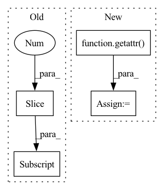

Pattern ID :7733
Before Change
options=tuple(["-DONEBYONE"]) if C.H == 1 and C.W == 1 and C.px == 0 and C.py == 0 else tuple(),
argdtypes=tuple([None, None, None] + [np.int32]*16))
conv_prg([C.bs*C.cout, C.oy, C.ox], None, x.cl, w.cl, ret.cl,
*[x for x in list(C[0:12] )+[C.dx, C.dy, C.px, C.py]])
return ret
After Change
ret = GPUBuffer((C.bs, C.cout, C.oy, C.ox))
assert op == ProcessingOps.CONV, f"{op} isn"t supported"
ints = "".join(f"int {x} = {getattr(C, x)};" for x in ["H", "W", "cin", "ys", "xs", "dx", "dy", "px", "py"])
params = [(f"int {x}", getattr( C, x) ) for x in ["groups", "rcout", "oy", "ox", "iy", "ix"]]
conv_prg = clbuild("conv",
__kernel void conv(__global const float* restrict input, __global const float* restrict weight, __global float* restrict output,
+",".join([x[0] for x in params])+) {In pattern: SUPERPATTERN
Frequency: 3
Non-data size: 4
Instances Fragment ID: 25624416
Project Name: geohot/tinygrad
Commit Name: d05e7c291ad428ba3584a1529e6d71c264c5b7b9
Time: 2022-06-19
Author: 72895+geohot@users.noreply.github.com
File Name: tinygrad/llops/ops_gpu.py
M Class Name: AnonimousClass
N Class Name: AnonimousClass
M Method Name: processing_op(4)
N Method Name: processing_op(4)
M Parent Class:
N Parent Class:
M File Name: tinygrad/llops/ops_gpu.py
N File Name: tinygrad/llops/ops_gpu.py
M Start Line: 172
M End Line: 176
N Start Line: 128
N End Line: 164
Before Change
for op in operators:
for f in op.operators:
if "linalg_" in f:
ret = getattr(torch.linalg, f[7:] )(a, *op.input)
ret1 = getattr(torch.linalg, f[7:])(a, *op.input, out=tuple(ret))
for i, name in enumerate(op.names):
self.assertIs(getattr(ret, name), ret[i])After Change
check_namedtuple(ret2, op.names)
//
// 3. check the Tensor.f method, if it exists
meth = getattr( a, f, None)
if meth:
ret3 = meth(*op.input)
check_namedtuple(ret3, op.names)
Fragment ID: 25624417
Project Name: pytorch/pytorch
Commit Name: 5c5abd591d0b452ab8d4d37115fbc37cc8c984c7
Time: 2021-01-08
Author: anto.cuni@gmail.com
File Name: test/test_namedtuple_return_api.py
M Class Name: TestNamedTupleAPI
N Class Name: TestNamedTupleAPI
M Method Name: test_namedtuple_return(1)
N Method Name: test_namedtuple_return(1)
M Parent Class: unittest.TestCase
N Parent Class: unittest.TestCase
M File Name: test/test_namedtuple_return_api.py
N File Name: test/test_namedtuple_return_api.py
M Start Line: 51
M End Line: 89
N Start Line: 52
N End Line: 102
Before Change
imgfov_pc_cam = calib.project_global_to_cam(imgfov_pc_global, sensor)
cameraUVDepth = np.zeros_like(imgfov_pc_cam)
cameraUVDepth[:,0:2] = imgfov_pts_2d[:, 0:2]
cameraUVDepth[:,2] = imgfov_pc_cam[:,2]
// Show that the points are exactly the sameAfter Change
imgfov_pts_2d = pts_2d[fov_inds,:]//(3067, 3)
imgfov_pc_global = calib.project_lidar_to_global(imgfov_pc_velo.T)
imgfov_pc_cam = calib.project_global_to_cam(imgfov_pc_global, sensor)
cameraUVDepth = utils.view_points(imgfov_pc_cam[:3, :], getattr( calib,sensor) , normalize=True)//(3,n)
cameraUVDepth = cameraUVDepth.T
ipdb.set_trace()
//cameraUVDepth = np.zeros_like(imgfov_pc_cam) Fragment ID: 25624414
Project Name: simon3dv/frustum_pointnets_pytorch
Commit Name: a913a09a780c721caf47f9d5bcbc5cb5a9746c22
Time: 2020-01-28
Author: gzfansiming@gmail.com
File Name: nuscenes2kitti/prepare_data.py
M Class Name: AnonimousClass
N Class Name: AnonimousClass
M Method Name: demo(1)
N Method Name: demo(1)
M Parent Class:
N Parent Class:
M File Name: nuscenes2kitti/prepare_data.py
N File Name: nuscenes2kitti/prepare_data.py
M Start Line: 323
M End Line: 330
N Start Line: 204
N End Line: 328